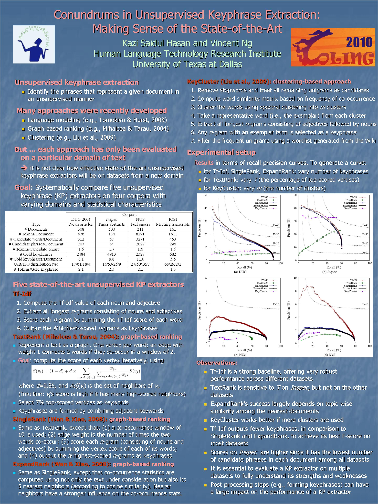

Conundrums in Unsupervised Keyphrase Extraction: Making Sense of the State-of-the-Art
Kazi Saidul Hasan and Vincent Ng.
Proceedings of COLING 2010: Posters Volume, pp. 365-373, 2010.
Click here for the
PostScript or PDF
version.
Abstract
State-of-the-art approaches for unsupervised keyphrase extraction are typically evaluated on a single dataset with a single parameter setting.
Consequently, it is unclear how effective these approaches are on a new dataset
from a different domain, and how sensitive they are to
changes in parameter settings.
To gain a better understanding of state-of-the-art unsupervised keyphrase
extraction algorithms, we conduct a systematic evaluation and analysis of
these algorithms on a variety of standard evaluation datasets.
Software
The Keyphrase Extraction package, which contains implementations of several
state-of-the-art unsupervised keyphrase extraction algorithms, is available
from
this page.
BibTeX entry
@InProceedings{Hasan+Ng:10a,
author = {Hasan, Kazi Saidul and Vincent Ng},
title = {Conundrums in Unsupervised Keyphrase Extraction: Making Sense of the State-of-the-Art},
booktitle = {Proceedings of COLING 2010: Posters Volume},
pages = {365--373},
year = 2010
}
